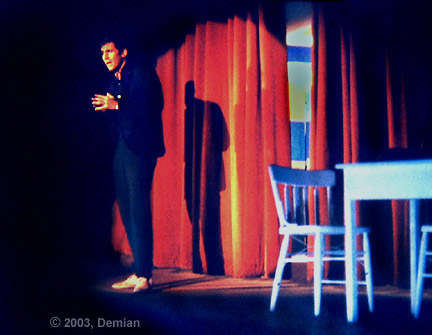
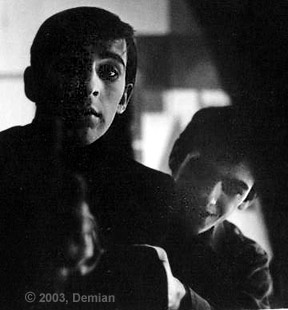
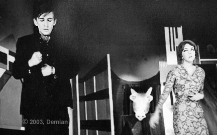
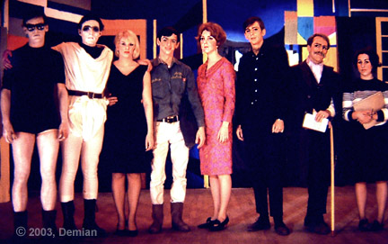

|
The great poet Ophée seeks only the truth. However, he stumbles when seeking truth from a horse. He is convinced that the horse uses his hooves to tap out secret messages.
 William Skurski — Ophée’s opening soliloquy.
 William Skurski, Richard White Ophée is shown the way into hell by the angel. The portal is the mirror.
 William Skurski, Patricia Coomey Ophée inadvertently looks at his wife and thereby kills a dead woman.
 John T. Sheedy (Azreal), Michael Leininger (Raphael), Katherine Thomas (Death), Richard White (Heurtebise), Patricia Coomey (Eurydice), William Skurski (Ophée), Richard Lizza (Commissioner of Police), Jean Zampiceni (Secretary to the Police)
The set was by Norman Archambault. Ophée was performed in Boston, December 1965. |
|
To Demian’s: Directing Résumé Acting Résumé | Back to: Sweet Corn Productions |
|
Demian Sweet Corn Productions Box 9685, Seattle, WA 98109-0685 206-935-1206 demian@buddybuddy.com www.buddybuddy.com/sweet.html |